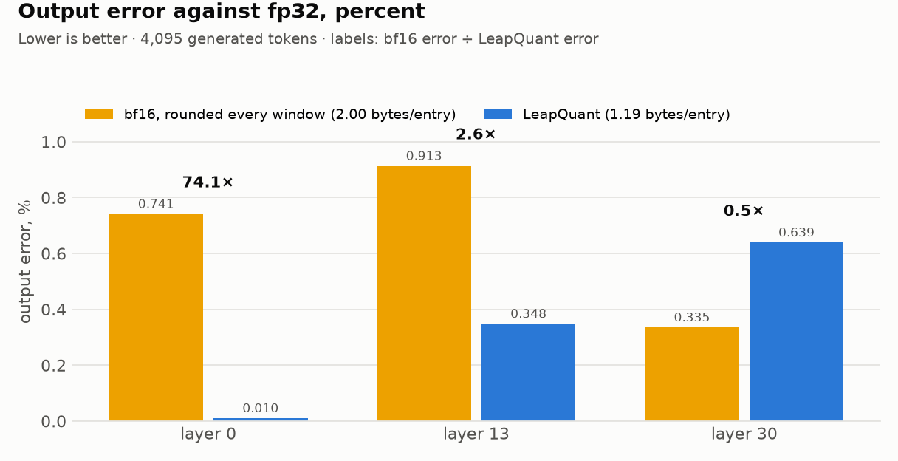
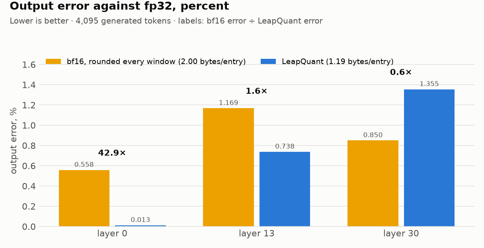
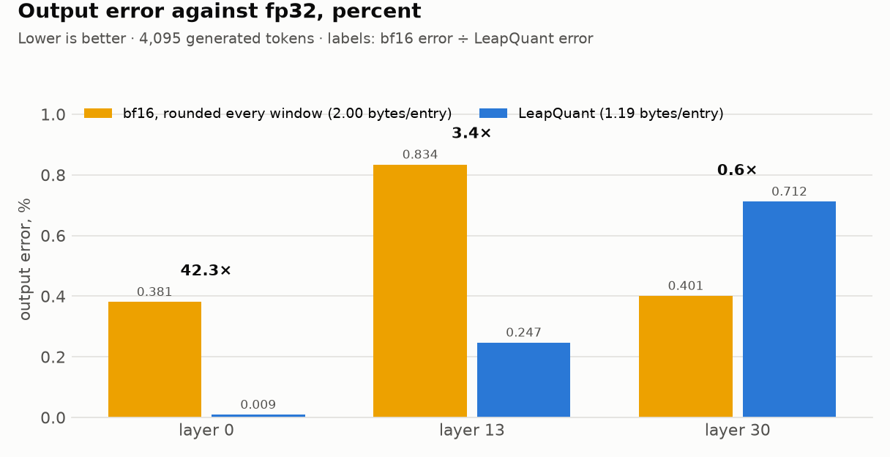

Error on real model states
What Qwen3.5-9B fed its Gated DeltaNet kernel while it generated text was recorded and replayed on a CPU through each way of storing the state. Error is the distance from the fp32 result, as a share of its size.
Prompt: code

| Layer | How the state is stored | Bytes per entry | State error, median head | State error, worst head | Output error |
|---|---|---|---|---|---|
| layer 0 | bf16, rounded every token | 2.00 | 0.997% | 12.567% | 3.677% |
| layer 0 | bf16, rounded every window | 2.00 | 0.288% | 2.317% | 0.741% |
| layer 0 | int8, rounded every token | 1.03 | 8.479% | 37.307% | 6.140% |
| layer 0 | int8, rounded every window | 1.03 | 1.844% | 10.026% | 2.060% |
| layer 0 | + compensators | 1.16 | 0.031% | 0.104% | 0.015% |
| layer 0 | + smoothing (= LeapQuant) | 1.19 | 0.024% | 0.087% | 0.010% |
| layer 13 | bf16, rounded every token | 2.00 | 0.801% | 21.435% | 3.592% |
| layer 13 | bf16, rounded every window | 2.00 | 0.151% | 3.365% | 0.913% |
| layer 13 | int8, rounded every token | 1.03 | 4.990% | 41.805% | 11.467% |
| layer 13 | int8, rounded every window | 1.03 | 1.001% | 18.431% | 3.410% |
| layer 13 | + compensators | 1.16 | 0.221% | 3.547% | 0.838% |
| layer 13 | + smoothing (= LeapQuant) | 1.19 | 0.146% | 2.769% | 0.348% |
| layer 30 | bf16, rounded every token | 2.00 | 1.235% | 12.552% | 1.924% |
| layer 30 | bf16, rounded every window | 2.00 | 0.274% | 2.207% | 0.335% |
| layer 30 | int8, rounded every token | 1.03 | 10.723% | 45.483% | 8.429% |
| layer 30 | int8, rounded every window | 1.03 | 2.798% | 13.078% | 2.777% |
| layer 30 | + compensators | 1.16 | 0.944% | 6.491% | 2.997% |
| layer 30 | + smoothing (= LeapQuant) | 1.19 | 0.579% | 4.539% | 0.639% |
Prompt: explain

| Layer | How the state is stored | Bytes per entry | State error, median head | State error, worst head | Output error |
|---|---|---|---|---|---|
| layer 0 | bf16, rounded every token | 2.00 | 10.716% | 21.763% | 2.398% |
| layer 0 | bf16, rounded every window | 2.00 | 1.171% | 4.114% | 0.558% |
| layer 0 | int8, rounded every token | 1.03 | 35.929% | 82.368% | 10.313% |
| layer 0 | int8, rounded every window | 1.03 | 9.272% | 26.198% | 2.778% |
| layer 0 | + compensators | 1.16 | 0.076% | 0.403% | 0.032% |
| layer 0 | + smoothing (= LeapQuant) | 1.19 | 0.050% | 0.289% | 0.013% |
| layer 13 | bf16, rounded every token | 2.00 | 12.619% | 51.993% | 7.660% |
| layer 13 | bf16, rounded every window | 2.00 | 0.763% | 7.242% | 1.169% |
| layer 13 | int8, rounded every token | 1.03 | 25.015% | 53.030% | 12.226% |
| layer 13 | int8, rounded every window | 1.03 | 9.265% | 22.223% | 6.592% |
| layer 13 | + compensators | 1.16 | 1.685% | 15.089% | 1.852% |
| layer 13 | + smoothing (= LeapQuant) | 1.19 | 1.230% | 9.801% | 0.738% |
| layer 30 | bf16, rounded every token | 2.00 | 10.702% | 21.337% | 3.959% |
| layer 30 | bf16, rounded every window | 2.00 | 1.313% | 4.989% | 0.850% |
| layer 30 | int8, rounded every token | 1.03 | 32.258% | 246.651% | 14.461% |
| layer 30 | int8, rounded every window | 1.03 | 10.781% | 18.808% | 4.508% |
| layer 30 | + compensators | 1.16 | 4.037% | 20.341% | 3.660% |
| layer 30 | + smoothing (= LeapQuant) | 1.19 | 2.574% | 15.381% | 1.355% |
Prompt: reasoning

| Layer | How the state is stored | Bytes per entry | State error, median head | State error, worst head | Output error |
|---|---|---|---|---|---|
| layer 0 | bf16, rounded every token | 2.00 | 1.985% | 11.831% | 3.031% |
| layer 0 | bf16, rounded every window | 2.00 | 0.444% | 1.857% | 0.381% |
| layer 0 | int8, rounded every token | 1.03 | 16.288% | 48.790% | 9.770% |
| layer 0 | int8, rounded every window | 1.03 | 3.201% | 11.281% | 3.008% |
| layer 0 | + compensators | 1.16 | 0.039% | 0.098% | 0.017% |
| layer 0 | + smoothing (= LeapQuant) | 1.19 | 0.037% | 0.073% | 0.009% |
| layer 13 | bf16, rounded every token | 2.00 | 0.742% | 26.287% | 8.077% |
| layer 13 | bf16, rounded every window | 2.00 | 0.163% | 5.410% | 0.834% |
| layer 13 | int8, rounded every token | 1.03 | 4.872% | 55.219% | 8.212% |
| layer 13 | int8, rounded every window | 1.03 | 1.144% | 15.305% | 6.215% |
| layer 13 | + compensators | 1.16 | 0.231% | 3.376% | 0.667% |
| layer 13 | + smoothing (= LeapQuant) | 1.19 | 0.141% | 2.329% | 0.247% |
| layer 30 | bf16, rounded every token | 2.00 | 0.835% | 19.205% | 2.995% |
| layer 30 | bf16, rounded every window | 2.00 | 0.196% | 2.206% | 0.401% |
| layer 30 | int8, rounded every token | 1.03 | 6.056% | 59.988% | 11.719% |
| layer 30 | int8, rounded every window | 1.03 | 1.611% | 18.224% | 3.613% |
| layer 30 | + compensators | 1.16 | 0.381% | 5.845% | 2.746% |
| layer 30 | + smoothing (= LeapQuant) | 1.19 | 0.263% | 4.112% | 0.712% |
Is each trace valid?
The replay's fp32 arithmetic must reproduce the model's own kernel output.
| Prompt | Layer | Tokens | Self-check: worst difference | Verdict |
|---|---|---|---|---|
| code | 0 | 4,095 | 1.08e-04 | ok |
| code | 13 | 4,095 | 4.06e-05 | ok |
| code | 30 | 4,095 | 1.25e-06 | ok |
| explain | 0 | 4,095 | 6.18e-05 | ok |
| explain | 13 | 4,095 | 6.40e-06 | ok |
| explain | 30 | 4,095 | 1.25e-06 | ok |
| reasoning | 0 | 4,095 | 1.25e-04 | ok |
| reasoning | 13 | 4,095 | 2.57e-05 | ok |
| reasoning | 30 | 4,095 | 1.24e-06 | ok |
What the charts show
- LeapQuant is at least as accurate as bf16 with the window on 6 of 9 traces, at 1.19 bytes per entry instead of 2.
- Rounding int8 after every token does not work: see the tables.
- The result depends on the layer. Look at the deepest layer before deciding.
What it does not show
Answer quality. These are arithmetic errors of one layer's state with the model's inputs held fixed; the model is not in the loop. Three layers of 24, three prompts. Source: c_replay_*.txt.
Generated 2026-11-13 00:39 from results/run-creative-franklin by reports/generate_reports.py.